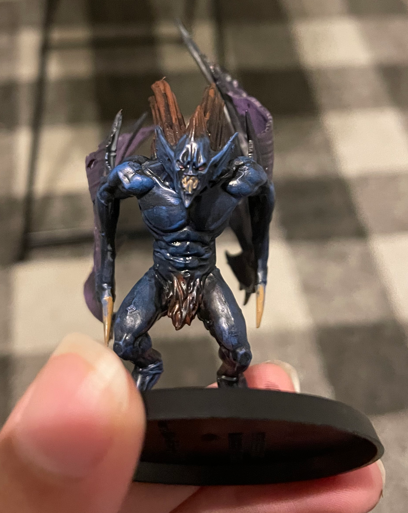
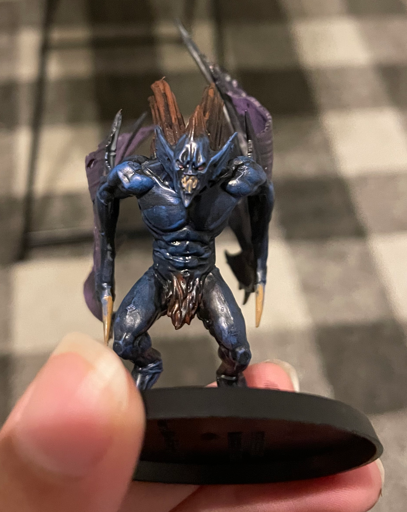

Most of my non-cs related hobbies are art related. I love doing digital art, with Krita (icon pictured above) as my "tool" of choice. Digital art is something I've only gotten into fairly recently, but I like to think I've gotten ever so slightly better at it, especially after learning how to use a drawing tablet. Krita is also something I like, because similar to Godot, it's completely free and open-source.

 

Something else I'm very fond of doing is painting. Besides typical and digital paintings, I also enjoy painting figurines, specifically Warhammer miniatures. Pictured above, is one of the paint jobs I'm most proud of, the figurine itself is a monstrous bat-like vampire and the thing I'm most happy with about it is definitely the wing texture which was very hard to get right. (ignore that the miniature has yet to be based!)